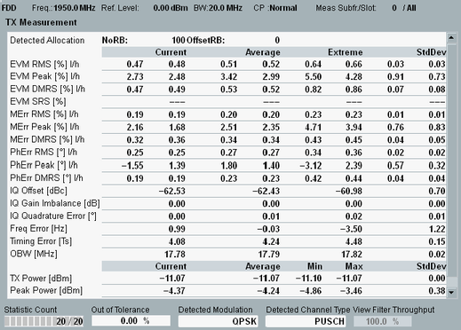
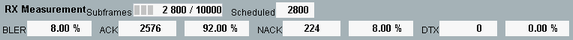

View TX Measurement and BLER
This view contains tables of statistical results for the TX and RX measurements.

TX measurement
The table provides an overview of statistical values obtained in the measured slot. Except for the OBW result, only a single carrier is analyzed. For signals with carrier aggregation, you can select which carrier is measured (setting "Measurement Carrier").
Other detailed views provide a subset of these values:
- Detected allocation:
"NoRB" is the number of allocated resource blocks.
"OffsetRB" is the offset of the first allocated resource block from the edge of the allocated UL transmission bandwidth. - EVM, magnitude error ("MErr"), phase error ("PhErr"):
The R&S CMW calculates and displays two values (l/h) for low and high EVM window position, see "Calculation of Modulation Results".
For the SC-FDMA data symbols (all symbols except reference symbol), RMS and peak values are provided. The DMRS value refers to the reference symbol (demodulation reference signal).
An "EVM SRS" line is only shown if SRS is enabled in the modulation settings. And result values are only shown if an SRS signal is detected in the last SC-FDMA symbol of a subframe. - I/Q origin offset: The I/Q offset is estimated from the distribution of the constellation points.
- Gain imbalance: absolute value of (1 + I/Q imbalance)
Quadrature error: angular component of (1 + I/Q imbalance)
These results are only available, if the view "EVM vs. subcarrier" is enabled and the measured carrier has a full RB allocation (for example 50 RB at 10 MHz bandwidth). Otherwise, these results are not calculated, to speed up the measurement. - Carrier frequency error: offset between the measured carrier frequency and the nominal RF frequency of the measured radio channel
- Timing error: difference between the actual timing and the expected timing
The timing error measurement requires an "external" trigger signal to derive the expected timing. Suitable trigger signals are, for example, the frame trigger signal provided by the signaling application or an external trigger fed in via the rear panel.
The unit Ts stands for the basic LTE time unit, see "Resources in Time and Frequency Domain". - Occupied bandwidth (OBW): width of the frequency range that contains 99% of the total integrated power of the transmitted spectrum
With carrier aggregation, the transmitted spectrum comprises all carriers. The center of the frequency range is the carrier center frequency / the aggregated bandwidth center frequency. - TX power: RMS averaged power over all samples in the slot, equivalent to the sum of the powers of all (allocated and non-allocated) RBs
- Peak power: peak power of all samples in the slot
- RB power: arithmetic mean value of the average powers in all allocated resource blocks
For query of the results via remote control, see "Modulation Results (Single Values)".
For the parameters below the "TX Measurement" table, see "Common View Elements".
The RX measurement results are displayed at the bottom of the view.

The table provides the following results:
- Subframes: number of already processed subframes and total number of subframes to be processed
All downlink subframes are counted, scheduled subframes and subframes without allocated resource blocks. - Scheduled: number of already measured subframes (scheduled downlink subframes)
If the measurement is configured correctly, this number equals the sum of the absolute values for ACK, NACK and DTX. - BLER: block error ratio, percentage of sent scheduled subframes for which no acknowledgment has been received
The result considers received NACK and PDCCH decoding errors (DTX):
BLER = (#NACK + #DTX) / (#ACK + #NACK + #DTX) - ACK / NACK / DTX: number of acknowledgments and negative acknowledgments received over the PUCCH
No answer at all (no ACK and no NACK) is counted as DTX. If a PUSCH is detected instead of a PUCCH, a NACK is counted.
The results are presented as absolute number and as percentage relative to the number of sent scheduled subframes.
For query of the results via remote control, see "BLER Results".
For information about this measurement, refer to "LTE RX Tests".